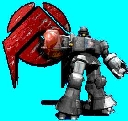
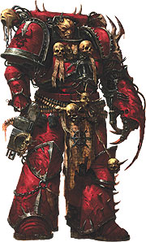

Forums galactiques > Assemblée Galactique : diplomatie officielle > Un nouveau venu
Pages : 1
| uriel31 Respect diplomatique : 8  30/04 ETU 19:07 | Score : 3 Détails Bonjour à tous, illustres représentants de la galaxie, Commandants et Commandantes.
Je me nomme Uriel31 j'ai l'honneur de rejoindre cette grande Assemblée. Etant nouveau dans cette galaxie je souhaite présenter mes salutations. Je salut les Commandants qui detiennent le pouvoir dans cette galaxie et propose mes services, malgré mon inexpérience, à ceux qui sauront octroyer a mon peuple sécurité et protection. Désireux de me faire une place parmis les grands de ce monde je suis à l'écoute de tout conseil. Je remercie l'Assemblée Galactique de m'avoir accordée ce temps de parole. Uriel31 | ||
| Nimrod Respect diplomatique : -1  30/04 ETU 20:35 | Score : 0 Détails Au passage,je me presente(si il y avait un nouveau topic pour chaque nouveau,ca serait le bordel)
Je suis le seigneur Nimrod,semi demon guerrier.Je cherche une coalition active et expansionniste pour me livrer a mon occupation favorite:la guerre.Je sais que j'ecris sans accents,c'est un probleme passager HRP. | ||
| promethe Respect diplomatique : 110  30/04 ETU 23:10 | Score : 2 Détails Bonjour commandant
en tant que représentant actuel du gouvernement je vous souhaite la bienvenue parmi nous. Si vous avez besoin de conseils ou d'une aide matérielle, et financière n'hésitez pas! Promethe | ||
| uriel31 Respect diplomatique : 8 30/04 ETU 23:54 | Score : 3 Détails Commandeur Supreme Promethe,
Mon peuple et moi nous inclinons devant votre autorité. Bien que ma présence ici soit récente j'ai eu vent de vos exploits au sein de l'assemblée, de comment vous avez liberé la galaxie avec vos alliés. Permettez moi de mettre notre labeur et notre fidélité au service votre nouvel ordre. Ceci dans l'espoir d'une protection militaire et d'une aide materielle qui nous aideraient à nous faire une place au parmi vos prestigieux alliés. Si vous le désirez je me tiens personnellement à votre disposition pour une discussion privée si votre temps vous le permet. Uriel31, Commandant de CorePrime | ||
| Ios Respect diplomatique : 93  01/05 ETU 00:57 | Score : 5 Détails Lucifer, entra dans l'Assemblée, son regard était noire comme l'espace infini.
Il s'avança devant Prométhé et le fixant dans les yeux lui dit sèchement : "Je ne trouve pas que ce proclamer Gouverneur de la galaxie et de crier victoire suite à la disparition des seigneurs de la galaxie soit une marque de bravoure, et encore moins un exploit. Ce qu'il l'est c'est tenir tête à toute la flotte de la résistance pendant les 5 derniers mois. Certes proposer son aide aux membres ainsi soumis est louable, mais votre pouvoir est-il légitime ? Y-a-t-il eu les moindres élections en dehors des rangs de la Résistance ? Je n'est pas en mémoire la consultation de l'Assemblée sur le bien fondé de vous placer à la tête des Éxilés." Lucifer tourna les talons et reparti comme un ouragan au Paradis. | ||
| promethe Respect diplomatique : 110 01/05 ETU 23:44 | Score : 8 Détails Vous avez beau jeu commandant de demander des élections démocratiques, après que vos amis aient été les tyrans de la galaxie pendant plusieurs moi.
pensez vous a propos qu'il faut plus de courage pour lutter contre les hommes les plus puissants de la galaxie, ou pour les suivre comme un bon petit toutou? je vous rappelle que la Resistance a combattu tous ces "puissants" quand personne ne croyait une victoire possible, et quand notre flotte faisait a peine un dixième de celle de Thâois. Vous inversez complètement la situation commandant... Retournez donc dans votre système bien gentiment ne venez pas réécrire l'histoire, suffisamment de mes amis ont laissés leur vie dans ce combat pour que vous puissiez bafouer leur mémoire de la sorte!! promethe | ||
| Raidjin Respect diplomatique : 14 02/05 ETU 02:46 | Score : 3 Détails *En ayant assez entendu à ce sujet, le jeune commandant se permit de prendre la parole de sa place.*
"Hum... Hum... Très cher commandants, malgré tout le respect que je vous dois, puis-je vous rappeler que ce n'est pas l'accession du commandant Prométhé au pouvoir ? En effet, pour le moment nous écoutons nos chers confrères se présenter dans la joie et la bonne humeur. N'allons donc pas tout casser par une petite querelle de pouvoir, voyons." *Pensant s'être suffisamment étalé en paroles inutiles, il se rassied pour continuer à voir les nouveaux commandants.* | ||
| Nimrod Respect diplomatique : -1 02/05 ETU 19:54 | Score : 1 Détails Cet endroit me fait penser à Origine:c'est mort,les débats sont stériles et dès qu'il y a un nouveau,cela se finit en bagarre.Saufici,merci à l'intervention de Raidjin.
| ||
| Leto Atréides Respect diplomatique : 352  02/05 ETU 20:52 | Score : 3 Détails Commandant Prométhé,
Ne laissez pas la perfide insinuation atteindre votre succès récent. Il revient maintenant à la Résistance de gérer les troubles actuels et calmer les esprits. Vous pouvez compter sur la collaboration de ma Maison. N'hésitez pas à demander. | ||
| promethe Respect diplomatique : 110 02/05 ETU 21:10 | Score : 3 Détails Commandant
nous conaissions déjà la noblesse de votre maison et sa droiture, et vous remercions de votre soutien. Promethe | ||
| Leto Atréides Respect diplomatique : 352 03/05 ETU 13:50 | Score : 3 Détails C un truk ou on cause la France et pas SMS ...
| ||
| Salverius Respect diplomatique : 169  03/05 ETU 14:09  | Score : 1 Détails Je dirais même plus mon cher Leto et en d'autre temps, je connais certains dirigeants qui auraient promptement fait rendre gorge à l'importun qui ne respecte pas les règles établies de cette noble assemblée....
Mon cher tuningman2702, il semble que vous n'ayez pas vraiment compris l'utilité de cette assemblée et les moeurs des commandants qui y interviennent. Je vous prierais de bien vouloir faire un rapide tour des différentes salles de débats afin d'y voir la teneur des discours et de vous abstenir dorénavant de telles interventions..... |
Pages : 1
Forums galactiques > Assemblée Galactique : diplomatie officielle > Un nouveau venu